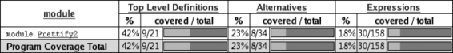
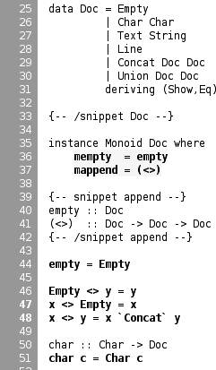
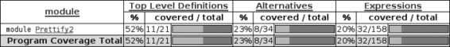

{% include JB/setup %}
{% raw %}
<div>

    <a name="toppage" class="calibre5" id="toppage"></a>
    <table width="100%" border="0" cellspacing="0" cellpadding="0" class="sfbody">
      <tr valign="top" class="calibre6">
        <td class="calibre7">
          <a name="MainContent" class="calibre5" id="MainContent"></a>
          <table width="95%" class="sfbody">
            <tr class="calibre6">
              <td class="v">
                <!--Copyright (c) 2002 Safari Tech Books Online-->
                <table width="100%" border="0" cellspacing="0" cellpadding="2" class="sfbody">
                  <tr class="calibre6">
                    <td valign="middle" class="v1" height="5">
                      
                    </td>
                  </tr>
                  <tr class="calibre6">
                    <td valign="middle" class="v1">
                      <table cellpadding="0" cellspacing="0" border="0" width="100%" class="sfbody">
                        <tr class="calibre6">
                          <td class="v"><span class="calibre9"> </span>
                   
                  <span class="calibre9">   </span>
             <span class="calibre9"> </span></td>
                        </tr>
                      </table>
                    </td>
                    <td class="v1"/>
                    <td valign="middle" class="v2"><a href="21061538.html" class="calibre13"></a> 
           
          <span class="calibre9"><a target="_self" href="quickcheck_indepth.html" title="Previous section" class="calibre13"></a></span>
				
				 
				
				<span class="calibre9"><a target="_self" href="barcode_split_000.html" title="Next section" class="calibre13"></a></span></td>
                  </tr>
                </table>
                <div id="section" class="calibre15">
                  <table width="100%" border="0" cellspacing="0" cellpadding="0" class="sfbody1">
                    <tr class="calibre16">
                      <td valign="top" class="v3">Safari IT Books Language Constructs Functional Programming Haskell Safari IT Books Programming Programming Programming Bryan O'Sullivan  Donald Bruce Stewart  John Goerzen  O'Reilly Media, Inc. Real World Haskell, 1st Edition<a name="I_sect111_d1e27052" class="calibre27" id="I_sect111_d1e27052"></a><h3 id="643999-905" class="docSection1Title">11.3. Measuring Test Coverage with HPC</h3><a name="x_n21" class="calibre27" id="x_n21"></a><p class="docText">HPC<a name="I_indexterm11_d1e27058" class="calibre27" id="I_indexterm11_d1e27058"></a><a name="ch11-qa" class="calibre27" id="ch11-qa"></a> (Haskell Program Coverage)<a name="ch11-hpc" class="calibre27" id="ch11-hpc"></a><a name="ch11-haskellpc" class="calibre27" id="ch11-haskellpc"></a> is an extension to the compiler to observe what parts of
    the code were actually executed during a given program run. This is useful
    in the context of testing, as it lets us observe exactly which functions,
    branches, and expressions were evaluated. The result is precise knowledge
    about the percent of code tested that's easy to obtain. HPC comes with a
    simple utility to generate useful graphs of program coverage, making it
    easy to zoom in on weak spots in the test suite.</p><a name="x_o21" class="calibre27" id="x_o21"></a><p class="docText">To obtain test coverage<a name="I_indexterm11_d1e27074" class="calibre27" id="I_indexterm11_d1e27074"></a><a name="I_indexterm11_d1e27079" class="calibre27" id="I_indexterm11_d1e27079"></a> data, all we need to do is add the <tt class="calibre34">-fhpc</tt> flag
    to the command line when compiling the tests:</p><pre class="calibre39">$ ghc -fhpc Run.hs --make</pre><a name="x_p21" class="calibre27" id="x_p21"></a><p class="docText">Then run the tests as normal:</p><pre class="calibre39">$ ./Run
                 simple : .....                            (1000)
                complex : ..                               (400)</pre><a name="x_q21" class="calibre27" id="x_q21"></a><p class="docText">During the test run, the trace of the program is written
    to <i class="docEmphasis">.tix</i> and <i class="docEmphasis">.mix</i> files<a name="I_indexterm11_d1e27100" class="calibre27" id="I_indexterm11_d1e27100"></a><a name="I_indexterm11_d1e27103" class="calibre27" id="I_indexterm11_d1e27103"></a> in the current directory. Afterwards, these files are used
    by the command-line tool, <tt class="calibre34">hpc</tt>, to display various statistics
    about what happened. The basic interface is textual. To begin, we can get
    a summary of the code tested during the run using the <tt class="calibre34">report</tt>
    flag to <tt class="calibre34">hpc</tt>. <a name="I_indexterm11_d1e27117" class="calibre27" id="I_indexterm11_d1e27117"></a>We'll exclude the test programs themselves (using the
    <tt class="calibre34">--exclude</tt> flag), so as to concentrate only on code in
    the<a name="I_indexterm11_d1e27124" class="calibre27" id="I_indexterm11_d1e27124"></a> pretty-printer library. Entering the following into the
    console:</p><pre class="calibre39">$ hpc report Run --exclude=Main --exclude=QC
  18% expressions used (30/158)
   0% boolean coverage (0/3)
        0% guards (0/3), 3 unevaluated
        100% 'if' conditions (0/0)
        100% qualifiers (0/0)
   23% alternatives used (8/34)
    0% local declarations used (0/4)
   42% top-level declarations used (9/21)</pre><a name="x_r21" class="calibre27" id="x_r21"></a><p class="docText">we see that, on the last line, 42% of top-level
    definitions were evaluated during the test run. Not too bad for a first
    attempt. As we test more and more functions from the library, this figure
    will rise. The textual version is useful for a quick summary, but to
    really see what's going on, it is best to look at the marked up output. To
    generate this, use the <tt class="calibre34">markup</tt> flag instead:</p><pre class="calibre39">$ hpc markup Run --exclude=Main --exclude=QC</pre><a name="x_s21" class="calibre27" id="x_s21"></a><p class="docText">This will generate one HTML file for each Haskell source
    file, and some index files. Loading the file <tt class="calibre34">hpc_index.html</tt>
    into a browser, we can see some pretty graphs of the code coverage. See
    <a class="docLink" href="#top-level">Figure 11-1</a>.</p><a name="top-level" class="calibre27" id="top-level"></a><p class="calibre37"><div class="calibre61"><h5 class="docTableTitle">Figure 11-1. Revised coverage for module Prettify2: 52% of top-level
      definitions (up from 42%), 23% of alternatives, 18% of
      expressions</h5><a name="I_mediaobject11_d1e27148" class="calibre27" id="I_mediaobject11_d1e27148"></a></div></p><p class="docText"></p><br class="calibre48"/><a name="x_t21" class="calibre27" id="x_t21"></a><p class="docText">Not too bad. Clicking through to the pretty module
    itself, we see the actual source of the program (see <a class="docLink" href="#annotated_coverage_output">Figure 11-2</a>). It marked up in bold yellow for
    code that wasn't tested, and marked simply bold code that was
    tested.</p><a name="annotated_coverage_output" class="calibre27" id="annotated_coverage_output"></a><p class="calibre37"><div class="calibre61"><h5 class="docTableTitle">Figure 11-2. Screenshot of annotated coverage output, displaying the Monoid
      instance for Doc in bold yellow (not tested), and other code nearby in
      bold (was executed)</h5><a name="I_mediaobject11_d1e27160" class="calibre27" id="I_mediaobject11_d1e27160"></a></div></p><p class="docText"></p><br class="calibre48"/><a name="x_u21" class="calibre27" id="x_u21"></a><p class="docText">We forgot to test the Monoid
    instance,<a name="I_indexterm11_d1e27170" class="calibre27" id="I_indexterm11_d1e27170"></a> for example, and some of the more complicated functions.
    HPC helps keep our test suite honest. Let's add a test for the typeclass
    instance of Monoid, which is the class of types that support
    appending and empty elements:</p><pre class="calibre39">-- file: ch11/QC.hs
prop_mempty_id x =
    mempty `mappend` x == x
  &amp;&amp;
    x `mappend` mempty == (x :: Doc)</pre><br class="calibre48"/>
<a name="x_v21" class="calibre27" id="x_v21"></a><p class="docText">Run this property in <tt class="calibre34">ghci</tt>, to check it
    is correct:</p><pre class="calibre39">ghci&gt; <b class="calibre40">quickCheck prop_mempty_id</b>
 passed 100 tests.
</pre><a name="x_w21" class="calibre27" id="x_w21"></a><p class="docText">We can now recompile and run the test driver. It is
    important to remove the old <i class="docEmphasis">.tix</i> file first though,
    or an error will occur as HPC tries to combine the statistics from
    separate runs:</p><pre class="calibre39">  $ ghc -fhpc Run.hs --make -no-recomp
  $ ./Run 
  Hpc failure: inconsistent number of tick boxes
  (perhaps remove Run.tix file?)
  $ rm *.tix
  $ ./Run   
                     simple : .....                            (1000)
                    complex : ...                              (600)</pre><a name="x_x21" class="calibre27" id="x_x21"></a><p class="docText">Another 200 tests were added to the suite, and our
    coverage statistics improves to 52% of the code base (see <a class="docLink" href="#coverage_for_module">Figure 11-3</a>).</p><a name="coverage_for_module" class="calibre27" id="coverage_for_module"></a><p class="calibre37"><div class="calibre61"><h5 class="docTableTitle">Figure 11-3. Coverage for module Prettify2: 42% of top-level definitions, 23%
      of alternatives, 18% of expressions</h5><a name="I_mediaobject11_d1e27206" class="calibre27" id="I_mediaobject11_d1e27206"></a></div></p><p class="docText"></p><br class="calibre48"/><a name="x_y21" class="calibre27" id="x_y21"></a><p class="docText">HPC ensures that we're honest in our testing, as anything
    less than 100% coverage will be pointed out in glaring color. In
    particular, it ensures the programmer has to think about error cases,
    complicated branches with obscure conditions, and all forms of code smell.
    When combined with a saturating test generation system such as
    QuickCheck's, testing becomes a rewarding activity and a core part of
    <a name="I_indexterm11_d1e27214" class="calibre27" id="I_indexterm11_d1e27214"></a><a name="I_indexterm11_d1e27215" class="calibre27" id="I_indexterm11_d1e27215"></a>Haskell <a name="I_indexterm11_d1e27217" class="calibre27" id="I_indexterm11_d1e27217"></a><a name="I_indexterm11_d1e27218" class="calibre27" id="I_indexterm11_d1e27218"></a>development.</p>
<ul class="calibre18"></ul></td>
                    </tr>
                  </table>
                  <table width="100%" border="0" cellspacing="0" cellpadding="2" class="sfbody1">
                    <tr class="calibre16">
                      <td valign="middle" class="v3" height="5">
                        
                      </td>
                    </tr>
                    <tr class="calibre16">
                      <td valign="middle" class="v3">
                        <table cellpadding="0" cellspacing="0" border="0" width="100%" class="sfbody1">
                          <tr class="calibre16">
                            <td class="v5"><span class="calibre33"> </span>
                   
                  <span class="calibre33">   </span>
             <span class="calibre33"> </span></td>
                          </tr>
                        </table>
                      </td>
                      <td class="v3"/>
                      <td valign="middle" class="v6"><a href="21061538.html" class="calibre2"></a> 
           
          <span class="calibre33"><a target="_self" href="quickcheck_indepth.html" title="Previous section" class="calibre2"></a></span>
				
				 
				
				<span class="calibre33"><a target="_self" href="barcode_split_000.html" title="Next section" class="calibre2"></a></span></td>
                    </tr>
                  </table>
                  <table width="100%" border="0" cellspacing="0" cellpadding="2" class="sfbody1">
                    <tr class="calibre16">
                      <td valign="top" class="v6">
                        <span class="calibre33"></span>
                      </td>
                    </tr>
                  </table>
                </div>
                <!--IP User 2-->
              </td>
            </tr>
          </table>
        </td>
        <td class="calibre7">
                         
                      </td>
      </tr>
      <tr class="calibre6">
        <td colspan="3" valign="bottom" class="calibre7">
          <br class="calibre20"/>
          <p class="v4"></p>
          <br class="calibre20"/>
        </td>
      </tr>
    </table>
  </div>

{% endraw %}

